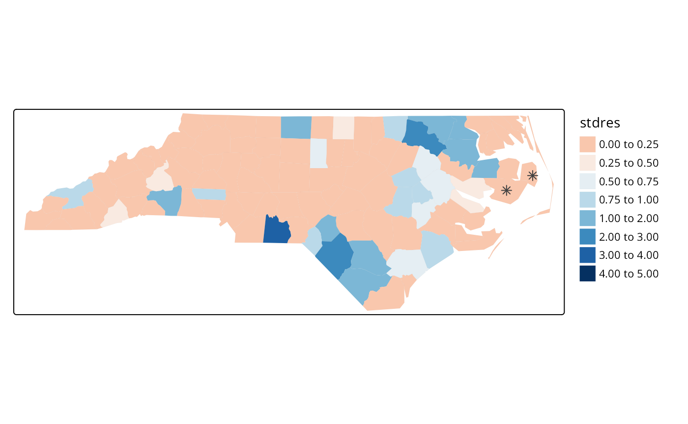
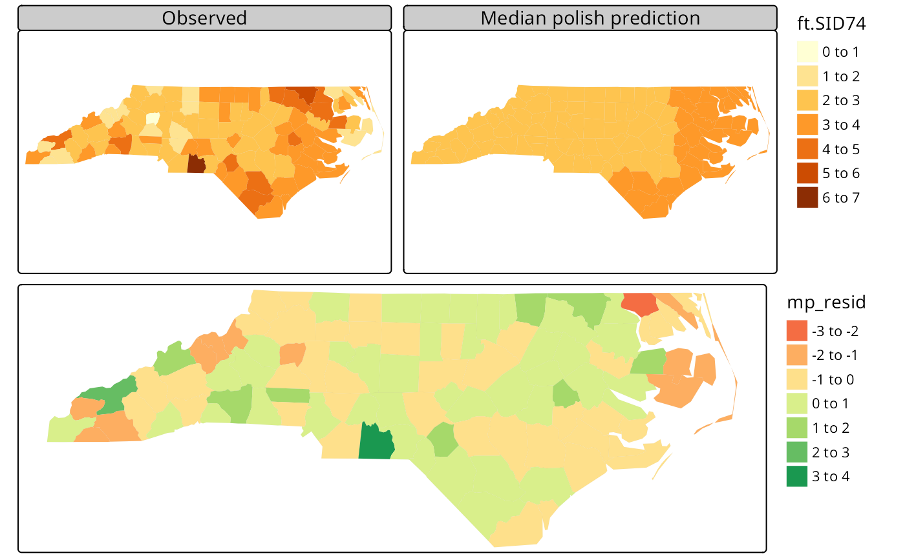

Introduction to the North Carolina SIDS data set (re-revised)
Roger Bivand
Source:vignettes/sids.Rmd
sids.RmdIntroduction
This data set was presented first in Symons, Grimson, and Yuan (1983), analysed with reference to the spatial nature of the data in Cressie and Read (1985), expanded in Cressie and Chan (1989), and used in detail in Cressie (1991). It is for the 100 counties of North Carolina, and includes counts of numbers of live births (also non-white live births) and numbers of sudden infant deaths, for the July 1, 1974 to June 30, 1978 and July 1, 1979 to June 30, 1984 periods. In Cressie and Read (1985), a listing of county neighbours based on shared boundaries (contiguity) is given, and in Cressie and Chan (1989), and in Cressie (1991, 386–89), a different listing based on the criterion of distance between county seats, with a cutoff at 30 miles. The county seat location coordinates are given in miles in a local (unknown) coordinate reference system. The data are also used to exemplify a range of functions in the spatial statistics module user’s manual (Kaluzny et al. 1996).
Getting the data into R
We will be using the spdep and
spreg packages, here version: spdep, version 1.3-10,
2025-01-17, the sf package and the
tmap package. The data from the sources referred to
above is documented in the help page for the nc.sids data
set in spData. The actual data, included in a shapefile
of the county boundaries for North Carolina were made available in the
maptools package 1. These data are known to be geographical
coordinates (longitude-latitude in decimal degrees) and are assumed to
use the NAD27 datum. The ESRI Shapefile is deprecated, and was replaced
here by a GeoPackage, written from reading the original files in
spData 2.3.1:
library(spdep)
nc <- st_read(system.file("shapes/sids.gpkg", package="spData")[1], quiet=TRUE)
#st_crs(nc) <- "EPSG:4267"
row.names(nc) <- as.character(nc$FIPSNO)The shapefile format presupposed that you had three files with
extensions .shp, .shx, and .dbf,
where the first contains the geometry data, the second the spatial
index, and the third the attribute data. They were required to have the
same name apart from the extension, and were read here using
sf::st_read() into the sf object
nc; the class is defined in sf. The
centroids of the largest polygon in each county are available using the
st_centroid method from sf as an
sfc POINT object, and can be used to place labels after
the extraction of the coordinate matrix:
sf_use_s2(TRUE)
plot(st_geometry(nc), axes=TRUE)
text(st_coordinates(st_centroid(st_geometry(nc), of_largest_polygon=TRUE)), label=nc$FIPSNO, cex=0.5)We can examine the names of the columns of the data frame to see what it contains — in fact some of the same columns that we will be examining below, and some others which will be useful in cleaning the data set.
names(nc)## [1] "CNTY_ID" "AREA" "PERIMETER" "CNTY_" "NAME" "FIPS"
## [7] "FIPSNO" "CRESS_ID" "BIR74" "SID74" "NWBIR74" "BIR79"
## [13] "SID79" "NWBIR79" "east" "north" "x" "y"
## [19] "lon" "lat" "L_id" "M_id" "geom"
summary(nc)## CNTY_ID AREA PERIMETER CNTY_
## Min. :1825 Min. :0.0420 Min. :0.999 Min. :1825
## 1st Qu.:1902 1st Qu.:0.0910 1st Qu.:1.324 1st Qu.:1902
## Median :1982 Median :0.1205 Median :1.609 Median :1982
## Mean :1986 Mean :0.1263 Mean :1.673 Mean :1986
## 3rd Qu.:2067 3rd Qu.:0.1542 3rd Qu.:1.859 3rd Qu.:2067
## Max. :2241 Max. :0.2410 Max. :3.640 Max. :2241
## NAME FIPS FIPSNO CRESS_ID
## Length:100 Length:100 Min. :37001 Min. : 1.00
## Class :character Class :character 1st Qu.:37050 1st Qu.: 25.75
## Mode :character Mode :character Median :37100 Median : 50.50
## Mean :37100 Mean : 50.50
## 3rd Qu.:37150 3rd Qu.: 75.25
## Max. :37199 Max. :100.00
## BIR74 SID74 NWBIR74 BIR79
## Min. : 248 Min. : 0.00 Min. : 1.0 Min. : 319
## 1st Qu.: 1077 1st Qu.: 2.00 1st Qu.: 190.0 1st Qu.: 1336
## Median : 2180 Median : 4.00 Median : 697.5 Median : 2636
## Mean : 3300 Mean : 6.67 Mean :1051.0 Mean : 4224
## 3rd Qu.: 3936 3rd Qu.: 8.25 3rd Qu.:1168.5 3rd Qu.: 4889
## Max. :21588 Max. :44.00 Max. :8027.0 Max. :30757
## SID79 NWBIR79 east north
## Min. : 0.00 Min. : 3.0 Min. : 19.0 Min. : 6.0
## 1st Qu.: 2.00 1st Qu.: 250.5 1st Qu.:178.8 1st Qu.: 97.0
## Median : 5.00 Median : 874.5 Median :285.0 Median :125.5
## Mean : 8.36 Mean : 1352.8 Mean :271.3 Mean :122.1
## 3rd Qu.:10.25 3rd Qu.: 1406.8 3rd Qu.:361.2 3rd Qu.:151.5
## Max. :57.00 Max. :11631.0 Max. :482.0 Max. :182.0
## x y lon lat
## Min. :-328.04 Min. :3757 Min. :-84.08 Min. :33.92
## 1st Qu.: -60.55 1st Qu.:3920 1st Qu.:-81.20 1st Qu.:35.26
## Median : 114.38 Median :3963 Median :-79.26 Median :35.68
## Mean : 91.46 Mean :3953 Mean :-79.51 Mean :35.62
## 3rd Qu.: 240.03 3rd Qu.:4000 3rd Qu.:-77.87 3rd Qu.:36.05
## Max. : 439.65 Max. :4060 Max. :-75.67 Max. :36.52
## L_id M_id geom
## Min. :1.00 Min. :1.00 MULTIPOLYGON :100
## 1st Qu.:1.00 1st Qu.:2.00 epsg:4267 : 0
## Median :2.00 Median :3.00 +proj=long...: 0
## Mean :2.12 Mean :2.67
## 3rd Qu.:3.00 3rd Qu.:3.25
## Max. :4.00 Max. :4.00Let’s check the different versions of the data against each other - sf and spData have NC SIDS files, as does GeoDa Center in two forms:
library(sf)
nc_sf <- st_read(system.file("shape/nc.shp", package="sf"),
quiet=TRUE)
st_crs(nc_sf)## Coordinate Reference System:
## User input: NAD27
## wkt:
## GEOGCRS["NAD27",
## DATUM["North American Datum 1927",
## ELLIPSOID["Clarke 1866",6378206.4,294.978698213898,
## LENGTHUNIT["metre",1]]],
## PRIMEM["Greenwich",0,
## ANGLEUNIT["degree",0.0174532925199433]],
## CS[ellipsoidal,2],
## AXIS["latitude",north,
## ORDER[1],
## ANGLEUNIT["degree",0.0174532925199433]],
## AXIS["longitude",east,
## ORDER[2],
## ANGLEUNIT["degree",0.0174532925199433]],
## ID["EPSG",4267]]
nc <- st_read(system.file("shapes/sids.gpkg",
package="spData"), quiet=TRUE)
st_crs(nc)## Coordinate Reference System:
## User input: NAD27
## wkt:
## GEOGCRS["NAD27",
## DATUM["North American Datum 1927",
## ELLIPSOID["Clarke 1866",6378206.4,294.978698213898,
## LENGTHUNIT["metre",1]]],
## PRIMEM["Greenwich",0,
## ANGLEUNIT["degree",0.0174532925199433]],
## CS[ellipsoidal,2],
## AXIS["geodetic latitude (Lat)",north,
## ORDER[1],
## ANGLEUNIT["degree",0.0174532925199433]],
## AXIS["geodetic longitude (Lon)",east,
## ORDER[2],
## ANGLEUNIT["degree",0.0174532925199433]],
## USAGE[
## SCOPE["Geodesy."],
## AREA["North and central America: Antigua and Barbuda - onshore. Bahamas - onshore plus offshore over internal continental shelf only. Belize - onshore. British Virgin Islands - onshore. Canada onshore - Alberta, British Columbia, Manitoba, New Brunswick, Newfoundland and Labrador, Northwest Territories, Nova Scotia, Nunavut, Ontario, Prince Edward Island, Quebec, Saskatchewan and Yukon - plus offshore east coast. Cuba - onshore and offshore. El Salvador - onshore. Guatemala - onshore. Honduras - onshore. Panama - onshore. Puerto Rico - onshore. Mexico - onshore plus offshore east coast. Nicaragua - onshore. United States (USA) onshore and offshore - Alabama, Alaska, Arizona, Arkansas, California, Colorado, Connecticut, Delaware, Florida, Georgia, Idaho, Illinois, Indiana, Iowa, Kansas, Kentucky, Louisiana, Maine, Maryland, Massachusetts, Michigan, Minnesota, Mississippi, Missouri, Montana, Nebraska, Nevada, New Hampshire, New Jersey, New Mexico, New York, North Carolina, North Dakota, Ohio, Oklahoma, Oregon, Pennsylvania, Rhode Island, South Carolina, South Dakota, Tennessee, Texas, Utah, Vermont, Virginia, Washington, West Virginia, Wisconsin and Wyoming - plus offshore . US Virgin Islands - onshore."],
## BBOX[7.15,167.65,83.17,-47.74]],
## ID["EPSG",4267]]As the actual CRS was unknown, the GeoPackage spData
version has been updated to "EPSG:4267".
Next, are the geometries the same? sf::st_equals returns
a logical matrix, so we’ll check that the diagonal values are all
TRUE, and that only those values are TRUE by
summing and recalling that n is 100:
suppressWarnings(st_crs(nc_sf) <- st_crs(nc))
xx <- st_equals(nc, nc_sf, sparse=FALSE)
all(diag(xx)) && sum(xx) == 100L## [1] TRUENext, let’s download the GeoDa files and repeat the comparisons:
td <- tempdir()
#download.file("https://geodacenter.github.io/data-and-lab//data/sids.zip", file.path(td, "sids.zip"), quiet=TRUE)
# local copy (2020-10-22) as repository sometimes offline
file.copy(system.file("etc/misc/sids.zip", package="spdep"), td)## [1] TRUE
unzip(file.path(td, "sids.zip"), c("sids/sids.dbf", "sids/sids.prj", "sids/sids.shp", "sids/sids.shx"), exdir=td)
sids_sf <- st_read(file.path(td, "sids/sids.shp"), quiet=TRUE)
#download.file("https://geodacenter.github.io/data-and-lab//data/sids2.zip", file.path(td, "sids2.zip"), quiet=TRUE)
file.copy(system.file("etc/misc/sids2.zip", package="spdep"), td)## [1] TRUE
unzip(file.path(td, "sids2.zip"), c("sids2/sids2.dbf", "sids2/sids2.prj", "sids2/sids2.shp", "sids2/sids2.shx"), exdir=td)
sids2_sf <- st_read(file.path(td, "sids2/sids2.shp"), quiet=TRUE)
st_crs(sids_sf)## Coordinate Reference System:
## User input: WGS 84
## wkt:
## GEOGCRS["WGS 84",
## DATUM["World Geodetic System 1984",
## ELLIPSOID["WGS 84",6378137,298.257223563,
## LENGTHUNIT["metre",1]]],
## PRIMEM["Greenwich",0,
## ANGLEUNIT["degree",0.0174532925199433]],
## CS[ellipsoidal,2],
## AXIS["latitude",north,
## ORDER[1],
## ANGLEUNIT["degree",0.0174532925199433]],
## AXIS["longitude",east,
## ORDER[2],
## ANGLEUNIT["degree",0.0174532925199433]],
## ID["EPSG",4326]]
st_crs(sids2_sf)## Coordinate Reference System:
## User input: WGS 84
## wkt:
## GEOGCRS["WGS 84",
## DATUM["World Geodetic System 1984",
## ELLIPSOID["WGS 84",6378137,298.257223563,
## LENGTHUNIT["metre",1]]],
## PRIMEM["Greenwich",0,
## ANGLEUNIT["degree",0.0174532925199433]],
## CS[ellipsoidal,2],
## AXIS["latitude",north,
## ORDER[1],
## ANGLEUNIT["degree",0.0174532925199433]],
## AXIS["longitude",east,
## ORDER[2],
## ANGLEUNIT["degree",0.0174532925199433]],
## ID["EPSG",4326]]It looks as though the external files are assuming WGS84/NAD83 for the datum, but also contain the same geometries.
suppressWarnings(st_crs(sids_sf) <- st_crs(nc_sf))
xx <- st_equals(sids_sf, nc_sf, sparse=FALSE)
all(diag(xx)) && sum(xx) == 100L## [1] FALSE
suppressWarnings(st_crs(sids2_sf) <- st_crs(nc_sf))
xx <- st_equals(sids2_sf, nc_sf, sparse=FALSE)
all(diag(xx)) && sum(xx) == 100L## [1] FALSENow for the contents of the files - sids2 also contains
rates, while the file in spData contains the coordinates as
given in Cressie (1991), and the parcels
of contiguous counties on p. 554, and the aggregations used for median
polishing.
all.equal(as.data.frame(nc_sf)[,1:14], as.data.frame(sids_sf)[,1:14])## [1] "Names: 12 string mismatches"
## [2] "Component 4: Modes: numeric, character"
## [3] "Component 4: target is numeric, current is character"
## [4] "Component 5: 100 string mismatches"
## [5] "Component 6: Modes: character, numeric"
## [6] "Component 6: target is character, current is numeric"
## [7] "Component 7: Mean relative difference: 0.9986388"
## [8] "Component 8: Mean relative difference: 64.33901"
## [9] "Component 9: Mean relative difference: 0.9979786"
## [10] "Component 10: Mean relative difference: 156.5427"
## [11] "Component 11: Mean relative difference: 3.01968"
## [12] "Component 12: Mean relative difference: 0.9980208"
## [13] "Component 13: Mean relative difference: 160.8194"
## [14] "Component 14: Modes: numeric, list"
## [15] "Component 14: Attributes: < target is NULL, current is list >"
## [16] "Component 14: target is numeric, current is sfc_MULTIPOLYGON"
all.equal(as.data.frame(nc_sf)[,1:14], as.data.frame(sids2_sf)[,1:14])## [1] "Names: 12 string mismatches"
## [2] "Component 4: Modes: numeric, character"
## [3] "Component 4: target is numeric, current is character"
## [4] "Component 5: 100 string mismatches"
## [5] "Component 6: Modes: character, numeric"
## [6] "Component 6: target is character, current is numeric"
## [7] "Component 7: Mean relative difference: 0.9986388"
## [8] "Component 8: Mean relative difference: 64.33901"
## [9] "Component 9: Mean relative difference: 0.9979786"
## [10] "Component 10: Mean relative difference: 156.5427"
## [11] "Component 11: Mean relative difference: 3.01968"
## [12] "Component 12: Mean relative difference: 0.9980208"
## [13] "Component 13: Mean relative difference: 160.8194"
## [14] "Component 14: Mean relative difference: 0.9984879"The spData data set has some columns reordered and a surprise:
all.equal(as.data.frame(nc_sf)[,1:14], as.data.frame(nc)[,c(2,3,4,1,5:14)])## [1] "Component \"NWBIR74\": Mean relative difference: 0.04891304"so a difference in NWBIR74:
which(!(nc_sf$NWBIR74 == nc$NWBIR74))## [1] 21
c(nc$NWBIR74[21], nc_sf$NWBIR74[21])## [1] 386 368where spData follows Cressie (1991) and sf and Geoda follow Cressie and Chan (1989) for NWBIR74 in Chowan county.
We will now examine the data set reproduced from Cressie and collaborators, included in spData (formerly in spdep), and add the neighbour relationships used in Cressie and Chan (1989) to the background map as a graph shown in Figure :
gal_file <- system.file("weights/ncCR85.gal", package="spData")[1]
ncCR85 <- read.gal(gal_file, region.id=nc$FIPSNO)
ncCR85## Neighbour list object:
## Number of regions: 100
## Number of nonzero links: 492
## Percentage nonzero weights: 4.92
## Average number of links: 4.92
gal_file <- system.file("weights/ncCC89.gal", package="spData")[1]
ncCC89 <- read.gal(gal_file, region.id=nc$FIPSNO)
ncCC89## Neighbour list object:
## Number of regions: 100
## Number of nonzero links: 394
## Percentage nonzero weights: 3.94
## Average number of links: 3.94
## 2 regions with no links:
## 37055, 37095
## 3 disjoint connected subgraphs
plot(st_geometry(nc), border="grey")
plot(ncCC89, st_centroid(st_geometry(nc), of_largest_polygon), add=TRUE, col="blue")Printing the neighbour object shows that it is a neighbour list
object, with a very sparse structure — if displayed as a matrix, only
3.94% of cells would be filled. Objects of class
nb contain a list as long as the number of
counties; each component of the list is a vector with the index numbers
of the neighbours of the county in question, so that the neighbours of
the county with region.id of
37001 can be retreived by matching against the
indices. More information can be obtained by using
summary() on an nb
object. Finally, we associate a vector of names with the neighbour list,
through the row.names argument. The names
should be unique, as with data frame row names.
## [1] 11 26 29 30 48
r.id[ncCC89[[match("37001", r.id)]]]## [1] 37033 37081 37135 37063 37037The neighbour list object records neighbours by their order in
relation to the list itself, so the neighbours list for the county with
region.id “37001” are the seventeenth,
nineteenth, thirty-second, forty-first and sixty-eighth in the list. We
can retreive their codes by looking them up in the
region.id attribute.
as.character(nc$NAME)[card(ncCC89) == 0]## [1] "Dare" "Hyde"We should also note that this neighbour criterion generates two
counties with no neighbours, Dare and Hyde, whose county seats were more
than 30 miles from their nearest neighbours. The
card() function returns the cardinality of the
neighbour set. We need to return to methods for handling no-neighbour
objects later on. We will also show how new neighbours lists may be
constructed in , and compare these with those from the literature.
Probability mapping
Rather than review functions for measuring and modelling spatial dependence in the spdep package, we will focus on probability mapping for disease rates data. Typically, we have counts of the incidence of some disease by spatial unit, associated with counts of populations at risk. The task is then to try to establish whether any spatial units seem to be characterised by higher or lower counts of cases than might have been expected in general terms (Bailey and Gatrell 1995).
An early approach by Choynowski (1959),
described by Cressie and Read (1985) and
Bailey and Gatrell (1995), assumes, given
that the true rate for the spatial units is small, that as the
population at risk increases to infinity, the spatial unit case counts
are Poisson with mean value equal to the population at risk times the
rate for the study area as a whole. Choynowski’s approach folds the two
tails of the measured probabilities together, so that small values, for
a chosen
,
occur for spatial units with either unusually high or low rates. For
this reason, the high and low counties are plotted separately below.
Note that cut returns a factor labeled with
cut intervals.
ch <- choynowski(nc$SID74, nc$BIR74)
nc$ch_pmap_low <- ifelse(ch$type, ch$pmap, NA)
nc$ch_pmap_high <- ifelse(!ch$type, ch$pmap, NA)
prbs <- c(0,.001,.01,.05,.1,1)
nc$high = cut(nc$ch_pmap_high, prbs)
nc$low = cut(nc$ch_pmap_low,prbs )## [1] TRUE
library(tmap)
tmap4 <- packageVersion("tmap") >= "3.99"
if (tmap4) {
tm_shape(nc) + tm_polygons(fill=c("low", "high"), fill.scale = tm_scale(values="brewer.set1"), fill.legend = tm_legend("p-values", frame=FALSE, item.r = 0), fill.free=FALSE, lwd=0.01) + tm_layout(panel.labels=c("low", "high"))
} else {
tm_shape(nc) + tm_fill(c("low", "high"), palette="Set1", title="p-values") +
tm_facets(free.scales=FALSE) + tm_layout(panel.labels=c("low", "high"))
}
For more complicated thematic maps, it may be helpful to use ColorBrewer (https://colorbrewer2.org) colour palettes. Here we use palettes accessed through tmap, available in R in the RColorBrewer package.
While the choynowski() function only
provides the probability map values required, the
probmap() function returns raw (crude) rates,
expected counts (assuming a constant rate across the study area),
relative risks, and Poisson probability map values calculated using the
standard cumulative distribution function
ppois(). This does not fold the tails
together, so that counties with lower observed counts than expected,
based on population size, have values in the lower tail, and those with
higher observed counts than expected have values in the upper tail, as
we can see.
pmap <- probmap(nc$SID74, nc$BIR74)
nc$pmap <- pmap$pmap
brks <- c(0,0.001,0.01,0.025,0.05,0.95,0.975,0.99,0.999,1)
if (tmap4) {
tm_shape(nc) + tm_polygons(fill="pmap", fill.scale = tm_scale(values="brewer.rd_bu", midpoint=0.5, breaks=brks), fill.legend = tm_legend(frame=FALSE, item.r = 0, position = tm_pos_out("right", "center")), lwd=0.01) + tm_layout(component.autoscale=FALSE)
} else {
tm_shape(nc) + tm_fill("pmap", breaks=brks, midpoint=0.5, palette="RdBu") + tm_layout(legend.outside=TRUE)
}
Marilia Carvalho (personal communication) and Virgilio Gómez Rubio (Gómez-Rubio, Ferrándiz-Ferragud, and López-Quílez 2005) have pointed to the unusual shape of the distribution of the Poisson probability values (histogram below), repeating the doubts about probability mapping voiced by Cressie (1991, 392): “an extreme value may be more due to its lack of fit to the Poisson model than to its deviation from the constant rate assumption”. There are many more high values than one would have expected, suggesting perhaps overdispersion, that is that the ratio of the variance and mean is larger than unity.
hist(nc$pmap, main="")
One ad-hoc way to assess the impact of the possible failure of our assumption that the counts follow the Poisson distribution is to estimate the dispersion by fitting a generalized linear model of the observed counts including only the intercept (null model) and offset by the observed population at risk (suggested by Marilia Carvalho and associates):
brks <- c(-4, -3, -2, -1.5, -1, -0.5, 0.5, 1, 1.5, 2, 3, 4)
if (tmap4) {
tm_shape(nc) + tm_polygons(fill="stdres", fill.scale = tm_scale(values="brewer.rd_bu", midpoint=0.5, breaks=brks), fill.legend = tm_legend(frame=FALSE, item.r = 0, position = tm_pos_out("right", "center")), lwd=0.01) + tm_layout(component.autoscale=FALSE)
} else {
tm_shape(nc) + tm_fill("stdres", breaks=brks, midpoint=0, palette="RdBu") + tm_layout(legend.outside=TRUE)
}
The dispersion is equal to 2.2786188, much greater than unity; we calculate the corrected probability map values by taking the standardised residuals of the model, taking the size of the dispersion into account; the results are shown above. Many fewer counties appear now to have unexpectedly large or small numbers of cases. This is an ad-hoc adjustment made because R provides access to a wide range of model-fitting functions that can be used to help check our assumptions. Gómez-Rubio, Ferrándiz-Ferragud, and López-Quílez (2005) chose rather to construct a probability map under the hypothesis that data are drawn from a Negative Binomial distribution.
So far, none of the maps presented have made use of the spatial
dependence possibly present in the data. A further elementary step that
can be taken is to map Empirical Bayes estimates of the rates, which are
smoothed in relation to the raw rates. The underlying question here is
linked to the larger variance associated with rate estimates for
counties with small populations at risk compared with counties with
large populations at risk. Empirical Bayes estimates place more credence
on the raw rates of counties with large populations at risk, and modify
them much less than they modify rates for small counties. In the case of
small populations at risk, more confidence is placed in either the
global rate for the study area as a whole, or for local Empirical Bayes
estimates, in rates for a larger moving window including the neighbours
of the county being estimated. The function used for this in
spdep is EBlocal(), initially
contributed by Marilia Carvalho. It parallels a similar function in
GeoDa, but uses the Bailey and Gatrell
(1995) interpretation of Marshall
(1991), rather than that in GeoDa (Anselin, Syabri, and Smirnov 2002).
global_rate <- sum(nc$SID74)/sum(nc$BIR74)
nc$Expected <- global_rate * nc$BIR74
res <- EBlocal(nc$SID74, nc$Expected, ncCC89, zero.policy=TRUE)
nc$EB_loc <- res$est
brks <- c(0, 0.25, 0.5, 0.75, 1, 2, 3, 4, 5)
nc_miss <- st_centroid(st_geometry(nc[card(ncCC89) == 0,]), of_largest_polygon)
if (tmap4) {
tm_shape(nc) + tm_polygons(fill="stdres", fill.scale = tm_scale(values="brewer.rd_bu", midpoint=0.5, breaks=brks), fill.legend = tm_legend(frame=FALSE, item.r = 0, position = tm_pos_out("right", "center")), lwd=0.01) + tm_layout(component.autoscale=FALSE) + tm_shape(nc_miss) + tm_symbols(shape=8, size=0.5)
} else {
tm_shape(nc) + tm_fill("EB_loc", breaks=brks, midpoint=1, palette="RdBu") + tm_layout(legend.outside=TRUE) + tm_shape(nc_miss) + tm_symbols(shape=8, size=0.5)
}
The results are shown in Figure . Like other relevant functions in
spdep,EBlocal() takes a
zero.policy argument to allow missing values to be passed
through. In this case, no local estimate is available for the two
counties with no neighbours, marked by stars.
In addition to Empirical Bayes smoothing globally, used both for disease mapping and the Assuncão and Reis correction to Moran’s for rates data (to shrink towards the global rate when the population at risk is small, here as a Monte Carlo test), lists of local neighbours can be used to shrink towards a local rate.
set.seed(1)
EBImoran.mc(nc$SID74, nc$BIR74, nb2listw(ncCC89, style="B", zero.policy=TRUE), nsim=999, zero.policy=TRUE)##
## Monte-Carlo simulation of Empirical Bayes Index (mean subtracted)
##
## data: cases: nc$SID74, risk population: nc$BIR74
## weights: nb2listw(ncCC89, style = "B", zero.policy = TRUE)
## number of simulations + 1: 1000
##
## statistic = 0.25789, observed rank = 998, p-value = 0.002
## alternative hypothesis: greaterExploration and modelling of the data
One of the first steps taken by Cressie and Read (1985) is to try to bring out spatial trends by dividing North Carolina up into rough rectangles. Just to see how this works, let us map these rough rectangles before proceeding further.
if (tmap4) {
tm_shape(nc) + tm_polygons(fill="both", fill.scale=tm_scale(values="brewer.set1"), fill.legend = tm_legend("rough\nrectangles", frame=FALSE, item.r = 0, position = tm_pos_out("right", "center")), lwd=0.01) + tm_layout(component.autoscale=FALSE)
} else {
tm_shape(nc) + tm_fill("both", palette="Set1", title="rough\nrectangles") + tm_layout(legend.outside=TRUE)
}
Cressie constructs a transformed SIDS rates variable, 1974–78, for his analyses (with co-workers). We can replicate his stem-and-leaf figure on p. 396 in the book, taken from Cressie and Read (1989):
nc$ft.SID74 <- sqrt(1000)*(sqrt(nc$SID74/nc$BIR74) + sqrt((nc$SID74+1)/nc$BIR74))
stem(round(nc$ft.SID74, 1), scale=2)##
## The decimal point is at the |
##
## 0 | 9
## 1 | 111244
## 1 | 567789999
## 2 | 0011111222334444
## 2 | 55555666677778999999999
## 3 | 000111122333333344444444
## 3 | 5568999
## 4 | 013344
## 4 | 555557
## 5 | 2
## 5 |
## 6 | 3Median polish smoothing
Cressie (1991, 46–48, 393–400)
discusses in some detail how smoothing may be used to partition the
variation in the data into smooth and rough. In order to try it out on
the North Carolina SIDS data set, we will use a coarse gridding into
four columns and four rows given by Cressie
(1991, 553–54), where four grid cells are empty; these are given
by variables L_id and
M_id in object nc.
Next we aggregate the number of live births and the number of SIDS cases
1974–1978 for the grid cells:
Using the same Freeman-Tukey transformation as is used for the county
data, we coerce the data into a correctly configured matrix, some of the
cells of which are empty. The medpolish
function is applied to the matrix, being told to remove empty cells; the
function iterates over the rows and columns of the matrix using
median to extract an overall effect, row and
column effects, and residuals:
mFT <- sqrt(1000)*(sqrt(mSID74/mBIR74) + sqrt((mSID74+1)/mBIR74))
# mFT1 <- t(matrix(mFT, 4, 4, byrow=TRUE))
# wrong assignment of 12 elements to a 4x4 matrix detected by CRAN test 2021-05-22
rc <- do.call("rbind", lapply(strsplit(names(mFT), ":"), as.integer))
mFT1 <- matrix(as.numeric(NA), 4, 4)
for (i in 1:nrow(rc)) mFT1[rc[i,1], rc[i,2]] <- mFT[i]
med <- medpolish(mFT1, na.rm=TRUE, trace.iter=FALSE)
med##
## Median Polish Results (Dataset: "mFT1")
##
## Overall: 2.90965
##
## Row Effects:
## [1] -0.05686791 -0.37236370 0.05686791 0.79541774
##
## Column Effects:
## [1] -0.005484562 -0.446250551 0.003656375 0.726443256
##
## Residuals:
## [,1] [,2] [,3] [,4]
## [1,] NA -0.45800 0.000000 0.37556
## [2,] -0.092554 0.00000 0.101695 0.00000
## [3,] 0.092554 0.30464 -0.090726 -0.55364
## [4,] NA NA 0.000000 NAReturning to the factors linking rows and columns to counties, and
generating matrices of dummy variables using
model.matrix, we can calculate fitted values
of the Freeman-Tukey adjusted rate for each county, and residuals by
subtracting the fitted value from the observed rate. Naturally, the
fitted value will be the same for counties in the same grid cell:
mL_id <- model.matrix(~ as.factor(nc$L_id) -1)
mM_id <- model.matrix(~ as.factor(nc$M_id) -1)
nc$pred <- c(med$overall + mL_id %*% med$row + mM_id %*% med$col)
nc$mp_resid <- nc$ft.SID74 - nc$pred
if (tmap4) {
out1 <- tm_shape(nc) + tm_polygons(fill=c("ft.SID74", "pred"), fill.scale=tm_scale(values="brewer.yl_or_br"), fill.legend=tm_legend(position=tm_pos_out("right", "center"), frame=FALSE, item.r = 0), fill.free=FALSE, lwd=0.01) + tm_layout(panel.labels=c("Observed", "Median polish prediction"))
out2 <- tm_shape(nc) + tm_polygons(fill="mp_resid", fill.scale=tm_scale(values="brewer.rd_yl_gn", midpoint=0), fill.legend=tm_legend(position=tm_pos_out("right", "center"), frame=FALSE, item.r = 0), lwd=0.01)
} else {
out1 <- tm_shape(nc) + tm_fill(c("ft.SID74", "pred")) + tm_facets(free.scales=FALSE) + tm_layout(panel.labels=c("Observed", "Median polish prediction"))
out2 <- tm_shape(nc) + tm_fill("mp_resid", midpoint=0) + tm_layout(legend.outside=TRUE)
}
tmap_arrange(out1, out2, ncol=1)
The figure shows the median polish smoothing results as three maps, the observed Freeman-Tukey transformed SIDS rates, the fitted smoothed values, and the residuals. In addition, a plot for the median polish object is also shown, plotting the smooth residuals against the outer product of the row and column effects divided by the overall effect, which would indicate a lack of additivity between row and column if this was the case — this is more relevant for analysis of tables of covariates rather than geographical grids.